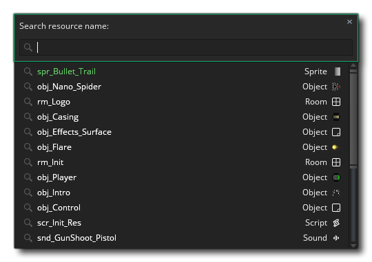
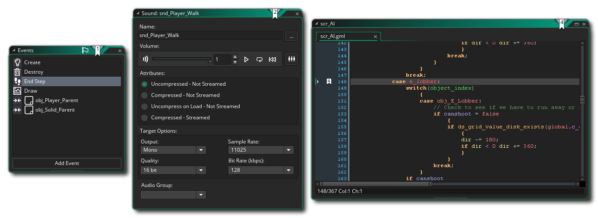
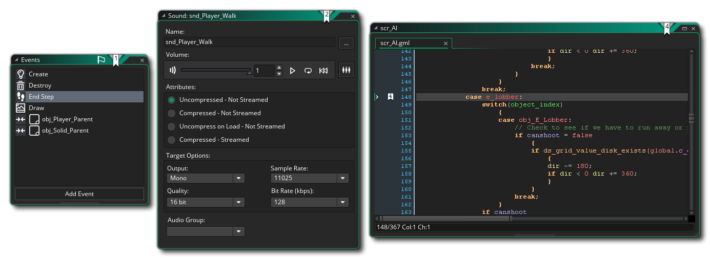

Después de iniciar sesión y comenzar un nuevo proyecto, GameMaker Studio 2 lo llevará al espacio de trabajo inicial con algunas ventanas básicas acopladas al IDE. En general, el espacio de trabajo es simplemente un área donde puedes organizar los diferentes recursos de tu juego mientras trabajas: 
Como puede ver, el espacio de trabajo inicial está en una pestaña en la parte superior de la pantalla (y puede cambiarle el nombre haciendo doble clic en la pestaña), pero puede crear más espacios de trabajo para el proyecto haciendo clic en  al costado, dándole múltiples espacios de trabajo posibles para cualquier proyecto individual. Por ejemplo, tal vez estés trabajando en interacciones entre el jugador y varios objetos enemigos, por lo que tendrás al jugador en su propio espacio de trabajo y los objetos enemigos en otro, y quizás otro espacio de trabajo solo para mostrar los scripts que ambos usan.
al costado, dándole múltiples espacios de trabajo posibles para cualquier proyecto individual. Por ejemplo, tal vez estés trabajando en interacciones entre el jugador y varios objetos enemigos, por lo que tendrás al jugador en su propio espacio de trabajo y los objetos enemigos en otro, y quizás otro espacio de trabajo solo para mostrar los scripts que ambos usan.
Otra característica importante de los espacios de trabajo es que puede hacer clic  en la pestaña y, sin soltar el botón del mouse
en la pestaña y, sin soltar el botón del mouse  abajo: arrástralo fuera de la ventana IDE principal a su propia ventana individual, lo que facilita la organización de las cosas si está utilizando, por ejemplo, varias pantallas. También fusiona estas ventanas secundarias del espacio de trabajo en la principal arrastrando la pestaña nuevamente a la primera ventana. Tenga en cuenta que aunque parezca tener dos instancias del IDE ejecutándose cuando hace esto, ambas son para el mismo proyecto y no puede tener un proyecto en uno y otro en el otro a menos que abra específicamente dos instancias de GameMaker Studio 2.
abajo: arrástralo fuera de la ventana IDE principal a su propia ventana individual, lo que facilita la organización de las cosas si está utilizando, por ejemplo, varias pantallas. También fusiona estas ventanas secundarias del espacio de trabajo en la principal arrastrando la pestaña nuevamente a la primera ventana. Tenga en cuenta que aunque parezca tener dos instancias del IDE ejecutándose cuando hace esto, ambas son para el mismo proyecto y no puede tener un proyecto en uno y otro en el otro a menos que abra específicamente dos instancias de GameMaker Studio 2.
La primera vez que inicie GameMaker Studio 2, su espacio de trabajo ya estará poblado por un par de ventanas que se "conectarán" al IDE. Estos se explican brevemente a continuación:
También puede ver en la imagen sobre la ventana de salida. Hay una serie de pestañas secundarias en esta ventana relacionadas con el Control de código fuente, Búsqueda y depuración, con la pestaña inicial para la salida de la consola / compilador, que muestra lo que está sucediendo al compilar un juego para probar o al crear un juego final paquete para distribución Esto también mostrará los mensajes de depuración que elija enviar desde su proyecto en tiempo de ejecución, y puede configurarse para mostrar diferentes cantidades de información de las Preferencias generales.
Si cierra la ventana de salida y desea recuperarla, puede usar el Menú de Windows.
A la derecha de la pantalla, puedes encontrar el árbol de recursos. Aquí es donde puedes crear y editar los recursos que usa tu juego, así como generar y cambiar configuraciones. Los recursos se crean haciendo clic derechoen la carpeta de recursos y seleccionando Crear, o desde el menú contextual en la parte superior del IDE que dice Recursos:
Seleccionar cualquiera de estas opciones creará un nuevo recurso vacío del tipo dado para usted. Tenga en cuenta que, si bien el árbol de recursos está acoplado al IDE de manera predeterminada, puede sacarlo y ponerlo en su propia ventana haciendo clic en
en el texto "Recursos" en la parte superior y arrastrando. Puede volver a acoplarlo de nuevo en cualquier momento arrastrándolo hacia los lados o hacia la parte inferior del IDE. Si cierra la ventana de recursos y desea recuperarla, puede usar el Menú de Windows.
Para obtener más información sobre los recursos disponibles, consulte la sección sobre Editores.
Navegando por el espacio de trabajo
Mientras que dentro de cualquier área de trabajo puede abrir el menú del botón derecho en cualquier momento haciendo clic con el botón derecho  en cualquier lugar, que abrirá el siguiente menú:
en cualquier lugar, que abrirá el siguiente menú: 
Al hacer clic en Recursos se abrirá una lista de todos los recursos en el Árbol de recursos que puede crear, y al seleccionar cualquiera de ellos se creará ese recurso por usted, y se enfocará el espacio de trabajo en la ventana del editor para ese recurso. Si hace clic en la opción de Windows, se le mostrará una lista de todas las ventanas actualmente abiertas dentro del área de trabajo y puede seleccionar cualquiera de ellas para que el área de trabajo se enfoque en esa ventana. Finalmente tiene la opción Ir a que abrirá la siguiente ventana: 
Esta ventana le permite ver una lista de todos los recursos en su juego y puede escribir texto en la parte superior de la ventana para filtrar los resultados que se muestran. Por ejemplo, si tiene 4 sprites todos con la palabra "logo" en alguna parte de su nombre, como spr_Logo_One, luego, al escribir "logo" se mostrarán solo esos cuatro sprites. Al hacer clic en cualquiera de los recursos que se muestran en la lista, se abrirá en el espacio de trabajo actual o se enfocará en el espacio de trabajo si ya está abierto. Tenga en cuenta que también puede usar el atajo de teclado  /
/  + T para abrir la ventana Ir a.
+ T para abrir la ventana Ir a.
Otro método para navegar en el espacio de trabajo es usar Marcadores. Puede agregar hasta 10 "marcadores" a ventanas IDE o secciones de código en scripts o eventos de objetos, y luego puede omitirlos rápidamente utilizando la combinación de teclas correcta. Para agregar un marcador, simplemente seleccione la ventana o línea de código que desea etiquetar y luego  +
+  + NumberKey[0 - 9], y esto configurará el marcador, etiquetando el elemento en el IDE de la siguiente manera: 
+ NumberKey[0 - 9], y esto configurará el marcador, etiquetando el elemento en el IDE de la siguiente manera: 
En la imagen de arriba hemos asignado marcadores numerados 1, 2 y 4 a diferentes partes del IDE, y ahora podemos navegar fuera de estas ventanas o incluso cerrarlas por completo, ya que el marcador nos permitirá volver directamente a él. en cualquier momento más tarde. Esto se hace presionando  + NumberKey[0 - 9], y si el elemento marcado como favorito se ha cerrado, se abrirá; de lo contrario, el espacio de trabajo se desplazará al marcador seleccionado.
+ NumberKey[0 - 9], y si el elemento marcado como favorito se ha cerrado, se abrirá; de lo contrario, el espacio de trabajo se desplazará al marcador seleccionado.
Si desea eliminar un marcador, simplemente necesita seleccionar la ventana marcada como favorita o la línea de código y luego repetir el  +
+  + NumberKey[0 - 9] que usaste para crearlo.
+ NumberKey[0 - 9] que usaste para crearlo.
Otras formas de navegar por el espacio de trabajo incluyen usar el atajo de teclado  /
/  +
+  + <Arrow Keys> para moverse entre las ventanas abiertas en la dirección presionada y presionando y manteniendo presionado el botón central del mouse
+ <Arrow Keys> para moverse entre las ventanas abiertas en la dirección presionada y presionando y manteniendo presionado el botón central del mouse  luego, al arrastrar el mouse, puede desplazarse por el espacio de trabajo también.
luego, al arrastrar el mouse, puede desplazarse por el espacio de trabajo también.
Unión cósmica
Mencionamos brevemente que puede acoplar muchas ventanas en la ventana actual del espacio de trabajo y puede des-conectar las que ya están conectadas. Si haces clic  en, por ejemplo, la pestaña Árbol de recursos en la parte superior y arrástrelo a la izquierda del espacio de trabajo actual, verá que se convierte en una ventana flotante libre.
en, por ejemplo, la pestaña Árbol de recursos en la parte superior y arrástrelo a la izquierda del espacio de trabajo actual, verá que se convierte en una ventana flotante libre.
Este recíproco es verdadero y si arrastra ciertas ventanas a los lados del espacio de trabajo (o la parte inferior), entonces se acoplarán, lo que significa que esencialmente se convierte en parte de la superposición de la ventana IDE y ya no es independiente. Al hacer esto, arrastre la ventana al área que desea acoplar y se resaltará para mostrar que puede acoplar la ventana allí:
De esta forma, puede crear una experiencia IDE personalizada que se adapte a su flujo de trabajo y a su forma de hacer las cosas. Vale la pena señalar que todas las ventanas acopladas se pueden ocultar / mostrar individualmente al hacer clic en el botón al lado de los elementos acoplados (resaltados en la imagen en la parte superior de esta página), o puede ocultar / mostrar todos los elementos acoplados con el botón rápido en la parte superior del IDE, y tenga en cuenta también que el IDE recordará las ventanas conectadas entre sesiones.
Botones rápidos
A continuación, enumeramos los botones rápidos que están disponibles por defecto con GameMaker Studio 2. Estos botones se pueden encontrar en la parte superior del IDE y representan muchos de los comandos más comunes que utilizará mientras trabaja en GameMaker Studio 2 para hacer que su flujo de trabajo sea más fluido (tenga en cuenta que la mayoría de estos botones también tienen una opción de menú equivalente):
| Abre la página de inicio en un nuevo espacio de trabajo | |
| Crea un nuevo proyecto | |
| Abra un proyecto creado anteriormente. | |
| Guarde el proyecto actual. Tenga en cuenta que, de forma predeterminada, GameMaker Studio 2 guardará su proyecto automáticamente (dependiendo de las Preferencias que haya establecido) y este botón es simplemente para que pueda forzar un guardado en cualquier momento. | |
| Al hacer clic en esto se ejecutará la prueba de su proyecto actual junto con el módulo de depuración. Úselo para probar y depurar su juego. Puede encontrar más información sobre el módulo de depuración en la sección sobre el depurador. | |
| Al hacer clic en esto, se probará tu proyecto en la plataforma de destino elegida. | |
| Este botón se puede utilizar para cancelar la compilación de tus juegos en el módulo de destino o (solo en ciertos objetivos) para detener el juego mientras se está ejecutando después de que se haya compilado. | |
| Al presionar este botón se borrará el caché del compilador de activos actual. GameMaker Studio 2 almacena imágenes, sonidos, secuencias de comandos, etc... entre el uso en un caché para ahorrar tiempo al probar el juego, ya que solo volverá a compilar las cosas que se han modificado antes de la prueba. Sin embargo, este caché puede dañarse o "desactualizarse" con el tiempo, o puede realizar una prueba completa sin que se haya realizado previamente el almacenamiento en caché, en cuyo caso puede borrar el caché presionando este botón. IMPORTANTE: se recomienda que siempre borre la caché antes de crear el ejecutable para cualquier plataforma de destino. | |
| Al hacer clic en este botón, se abrirá el Editor de opciones del juego principal. Tenga en cuenta que esta es solo la principal, general, opciones para el proyecto actual, pero también puede tener opciones específicas de la plataforma que figuran como parte del Árbol de recursos. | |
| Haga clic aquí para abrir el manual (o alternativamente, presione | |
| Esto alejará el espacio de trabajo enfocado para hacer que todo sea más pequeño (también puede lograr que se mantenga presionado) | |
| Esto restablecerá el espacio de trabajo enfocado para ser 1: 1 nuevamente. | |
| Esto acercará el espacio de trabajo enfocado para hacer que todo sea más grande (también puede lograr que se mantenga presionado) | |
| Esto alternará todos los elementos acoplados entre oculto y oculto. | |
| Esto activará y desactivará el modo portátil (Esto solo aparecerá si está usando una computadora portátil; consulte la sección sobre Entrada IDE para obtener más información). |